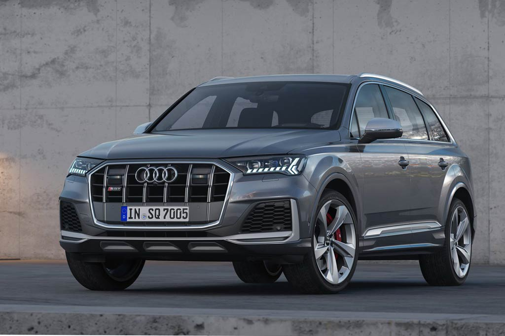
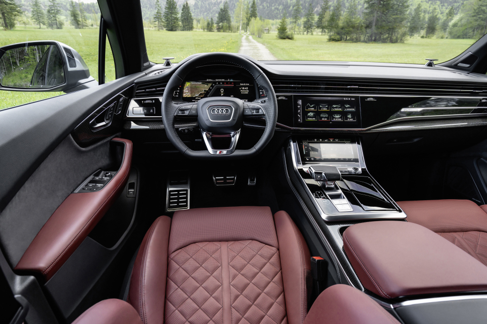
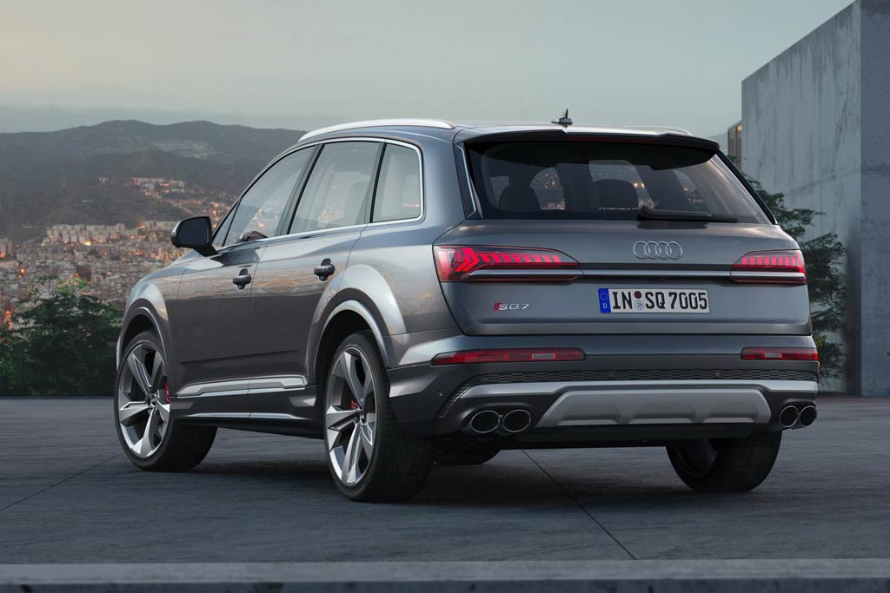
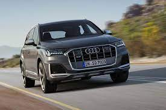

В начале марта две тысячи шестнадцатого на специальном мероприятии в Ингольштадте состоялась презентация «заряженного» вседорожника Audi SQ7, построенного на базе нового Q7 II поколения. Летом девятнадцатого года немцы выкатили рестайлинговую версию автомобиля.
Снаружи топовый Audi SQ7 TDI 2021 практически ничем себя не выдает, за исключением 20-дюймовых дисков эксклюзивного дизайна. Обновленный вариант модели получил иную решетку радиатора с вертикальными ребрами, новую головную оптику, а также другие бампера. Сзади прямоугольные патрубки выпускной системы заменили на круглые.
В салоне автомобиля изменений также немного. В отделке передней панели и на торпедо используются вставки из карбона, на педалях появились металлические накладки, немного поменялся щиток приборов, а завершает картину спортивное рулевое колесо с усеченным снизу ободом. После рестайлинга на центральной консоли прописались два экрана: верхний 10,1-дюймовый отвечает за мультимедию, а также управление навигацией, тогда как с нижнего диагональю на 8,6″ осуществляются настройки микроклимата, а также функции комфорта (подогрев, вентиляцию и массаж сидений).
Под капотом новой модели Ауди SQ7 2021 года прописался 4,0-литровый дизель TDI с тройным наддувом — в его конструкции использованы две турбины и нагнетатель с электрическим приводом, который питает расположенный под полом багажника 48-вольный литий-ионный аккумулятор. Сочетается движок в паре с модернизированной 8-диапазонной автоматической коробкой передач. Мощность силового агрегата составляет 435 л.с., а максимальный крутящий момент в 900 Нм доступен в диапазоне от 1 000 до 3 250 об/мин (позже этот же мотор получил Bentley Bentayga Diesel). На разгон с места до сотни Audi SQ7 требуется всего 4,8 секунды, а максимальная скорость вседорожника ограничена на 250 км/ч. Заявленный расход топлива в смешанном цикле равен 7,4 л/100 км, уровень выбросов CO2 — 194 г/км.
При этом для российского рынка для кроссовера оказался предложен немного упрощенный силовой агрегат, который лишили электрического нагнетателя, поэтому мощность оказалась снижена до 421 л.с. За доплату для SQ7 предлагается пакет «Driving Dynamics», в состав которого входят полноуправляемое шасси с поворачивающимися на небольшие углы (до 5 градусов) задними колесами, активные задний дифференциал и электромеханическая система подавления кренов (подобная используется на BMW 7er G11). При этом в базе Ауди SQ7 оснащен полным приводом quattro с центральным дифференциалом Torsen, пневмоподвеской, адаптивными амортизаторами и активными стабилизаторами поперечной устойчивости, которые могут регулироваться независимо друг от друга.
Начало продаж нового Audi SQ7 TDI в России пришлось на весну две тысячи двадцатого по цене от 7 305 000 рублей. В стандартное оснащение модели вошли диодные матричные фары, адаптивная пневмоподвеска, полноуправляемое шасси, вируальный щиток приборов, мультимедийка MMI navigation plus и колеса на 21″. При этом среди опций значатся аудиосистема Bang & Olufsen с 23 динамиками мощностью 1 920 ватт, четырехзонный климат-контроль, система ночного видения с функцией распознавания пешеходов, лазерно-люминофорный дальний свет, электродоводчики дверей и 22-дюймовые диски.
